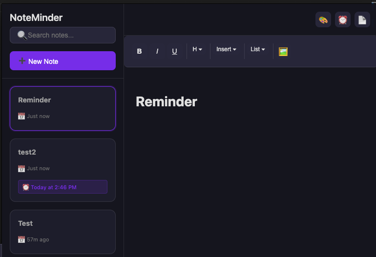
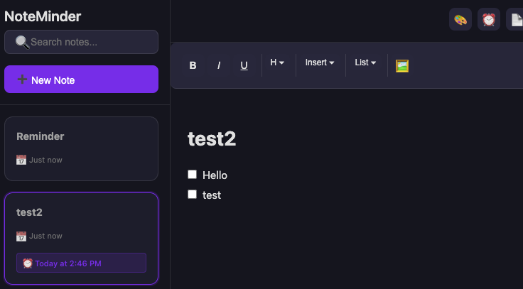

Features
Rich Text Notes
Write, format, and organize your text with full rich text support.Edge Docked
Stay on the edge of your screen for quick access anytime.Smart Reminders
Schedule one-time, daily, or weekly alerts.Color Coding
Assign colors to notes to organize visually.Search & Export
Find notes fast & export them when you need to.Cross-Platform
Available for macOS, Windows, and Linux.Download
Get the latest release (v1.1.6)
Windows Installer Linux AppImage macOS DMGHow to Use
- New Note: Click the “➕ New Note” button.
- Edit: Click a note to modify.
- Delete: Hover and click the trash icon.
- Search: Use the search bar to filter.
- Reminders: Click ⏰ on a note to set alerts.
Screenshots

